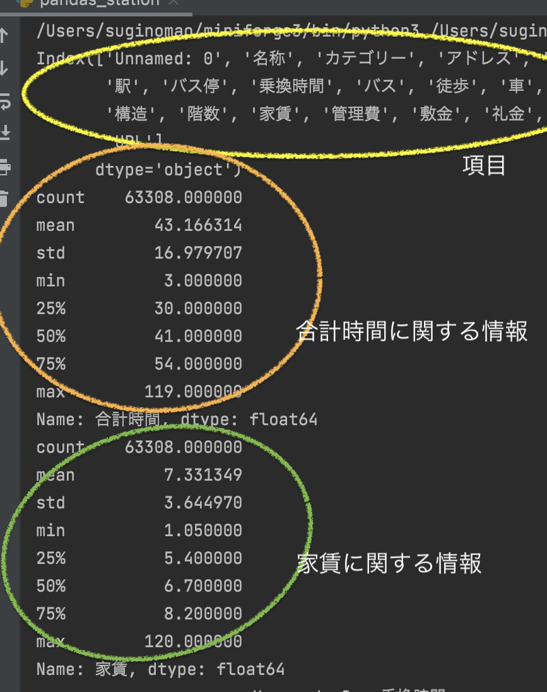
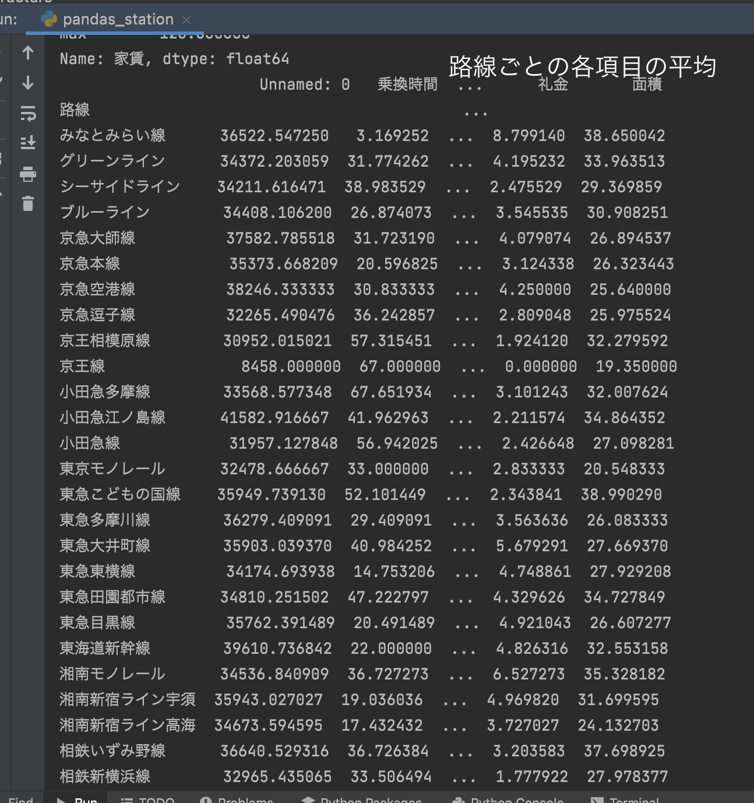
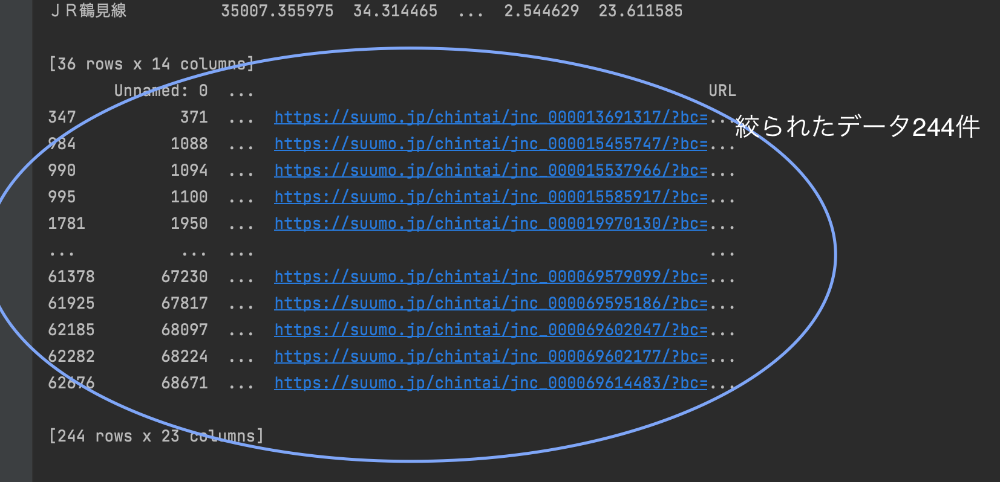
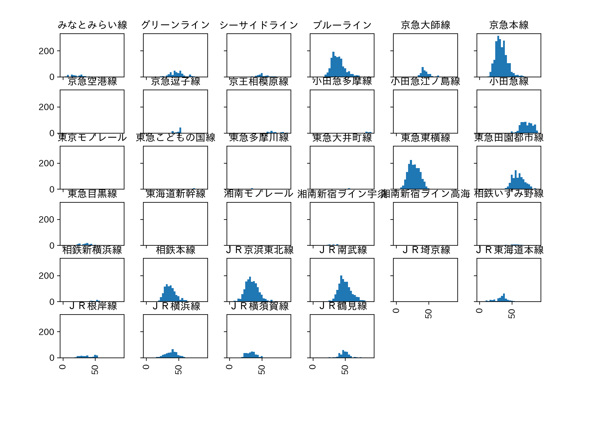
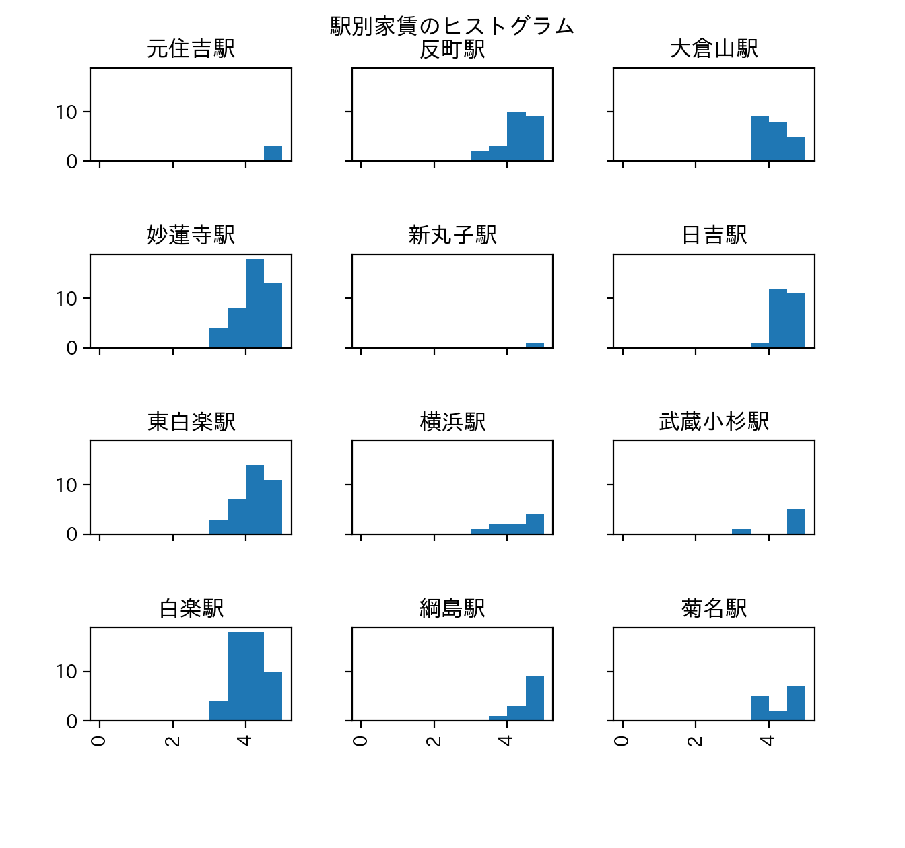

課題
まずデータの項目を見てから、合計時間と家賃に注目した。
そこから移動時間が短く家賃もそこそこ安い、東急東横線沿いを調べることにした。
一人暮らしを想定してワンルームを調べるが、条件は
- 移動時間は30分未満（合計時間の平均が約43分だったため、それよりも少し短くした）
- そのうち徒歩は15分未満
- 家賃は5万円未満
とした。
結果、反町〜妙蓮寺駅周辺の物件だと、移動時間も少なく、家賃も安いと考えた。
＜路線ごとの合計時間のヒストグラム＞





ソースコード
- import pandas as pd # データ分析に用いるライブラリ
- import matplotlib.pyplot as plt # グラフ表示に用いるライブラリ
- pd.set_option('display.unicode.east_asian_width', True) # 表示のずれを少し緩和
- plt.rcParams['font.family'] = 'IPAexGothic' # グラフ表示におけるフォントの指定data_path = "./data/titanic.csv"
- data_path = "./data1.csv" # データを読み込む
- df_data = pd.read_csv(data_path, encoding="utf-8-sig")
- print(df_data.columns) # 何の項目があるか確認
- print(df_data["合計時間"].describe()) # 合計時間に関する詳細を見る
- print(df_data["家賃"].describe()) # 家賃に関する詳細を見る
- print(df_data.groupby("路線").mean())
- mask = (df_data["間取り"] == "ワンルーム")
- df_room = df_data[mask]
- df_room.loc[:, "合計時間"].hist(by=df_room.loc[:, "路線"], range=(0, 80), bins=30, figsize=(10, 9), sharex=True, sharey=True)# 合計時間の軸は最大80分
- plt.xlabel("合計時間（分）") # 横軸のラベル
- plt.ylabel("件数") # 縦軸のラベル
- plt.title("合計時間のヒストグラム") # グラフのタイトル
- plt.subplots_adjust(top=0.92, # グラフ位置の微調整
- hspace=1) # グラフ間の微調整
- plt.show()
- mask = (df_data["路線"] == "東急東横線") & (df_data["合計時間"] < 30) & (df_data["家賃"] < 5) & (df_data["徒歩"] < 15) & (df_data["間取り"] == "ワンルーム")
- print(df_data[mask])
- axes = df_data[mask].loc[:, "家賃"].hist(by=df_data[mask].loc[:, "駅"],
- range=(0, 5), bins=10,# 家賃は最大5万円
- figsize=(10, 8),
- sharex=True, sharey=True)
- plt.suptitle("駅別家賃のヒストグラム") # グラフ全体のタイトル
- plt.subplots_adjust(top=0.92, # グラフ位置の微調整
- hspace=1) # グラフ間の微調整
- plt.show()
前の画面に戻る